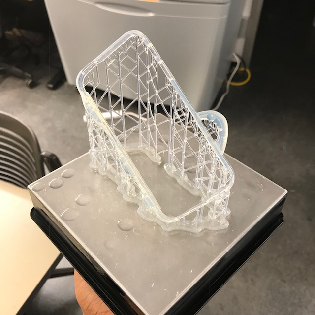
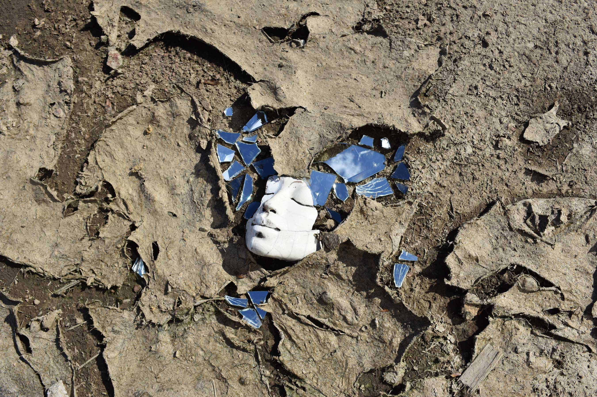
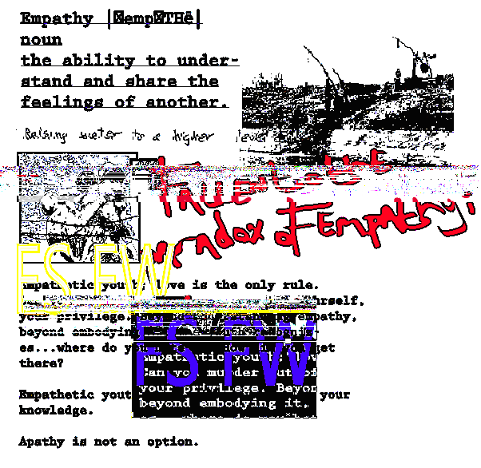
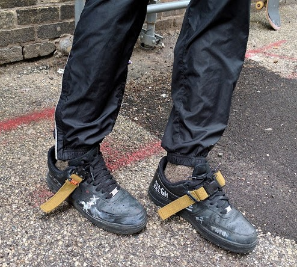

Exercise in Shoe construction
I adapted some old Y3 trainers and a pair of boot coverings I found at Village discount in Chicago. There's not much else to it, I've seen similar designs new and old.

Kaneda Case (iphone 5) 2018
Exercise in Product Design, Product Adaption, rapid prototyping.
Inspired by Kaneda's insane transformation in the 1988 film Akira.
kcase.zip

Bedouin 2016
In the summer after highschool my friends and I produced, performed and creative directed a project for the group 8x2 (we were members of the group).
Bedouin is our story of boredom and freedom. Being 17 and 18, we imagined an epic comglomeration of our own experiences and dreams, as well as those of our peers.
The sonic subjects capture a wide range of experiences, from an entire song about Hennessy to Police brutality and profiling, to the feeling when your friends beat a case,
and of course new love and heartbreak.
bedouin.zip

Empathetic Youth 2016-17
Empathetic Youth was my first solo deep dive into text, and screen printing on cloths, as well as natural dyes.
I spent several months documenting relationships (film/text) and wanted to capture the spirit of the friends at the time.
Sadly a majority of the footage was lost when a friend of mine lost my hard drive. The project culimated with a series of patches that i sent to my friends across the country.
The themes; empathy, trust, danger, love, worry.
ey.zip

AF1 Adaption Jan. 2017
Simple exploration into utility and symmetry.
The world has been customizing the AF1 for years-- this exercise was completed several months before the massive wave of work inspired by Virgil Abloh and Nike Campaigns.
af1jan2017.zip